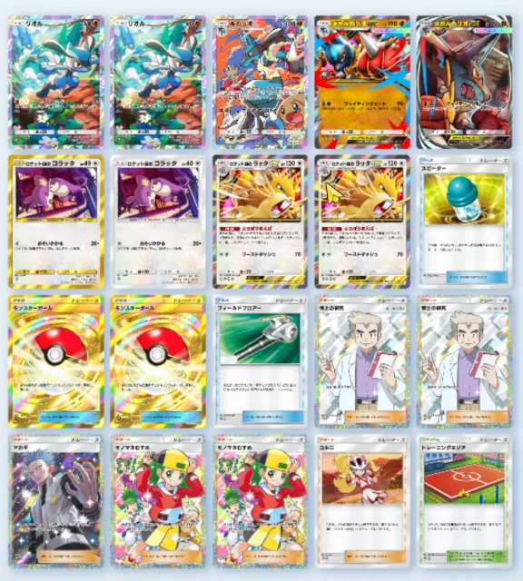

【ポケポケ】運営デッキ｜メガルカリオex×ラッタexで実戦6戦6勝の記録
結論：このデッキは「自分が強い」のではなく、相手を立たせないデッキでした。主役はロケット団のラッタexの特性どろぼうまえば。手札から出して進化させたとき1回だけ、相手のバトルポケモンからエネルギーをランダムに1個うばって、自分につけ替えます。相手のエネルギーが1個減って、こちらのメガルカリオex（HP190）のぶんが1個増える。遅延と加速を1枚でやります。実戦6戦は6勝0敗でした。
2026年8月29日の公式番組「Pokémon XP」を見て「開発陣が使ってたあのデッキ、実際どうなの？」と思った人。そして「ラッタexって強いの？」で手が止まっている人。特性の使いどころと、レシピ20枚、それと唯一の弱点まで書きます。
2026年8月29日に、この構築でランダムマッチを6戦回した実プレイの記録です。抜粋なし・6試合とも丸ごと動画に入れてあります。カード名・ワザ名・特性の効果テキストはすべてゲーム画面と照合しました（にげる・どく・やけど・たねのようにゲーム内でひらがな表記のものは、ひらがなのまま書いています）。
なお、これは公式が配布したレシピではありません。番組で開発陣が使っていた形を見て組み直し、自分で少し調整したものです。
そもそも「運営デッキ」とは
2026年8月29日の朝にあった公式番組「Pokémon XP」で、ポケポケの開発陣とコミュニティ代表のエキシビションマッチがありました。そこで開発陣側が持ち込んだデッキのひとつがメガルカリオex ＋ ロケット団のラッタexです。
番組内での説明はシンプルで、「ラッタexで相手のエネルギーの動きを邪魔しながら、ベンチでメガルカリオexを育て、準備が整ったらダメージを出す」というものでした。それを見て「これ強くないか？」となったので、番組を見ながらその場で組んで回したのがこの記事の元になっています。
実戦6戦の結果（6勝0敗）
まず数字から出します。同じ日・同じ構築で6戦して6勝0敗。ランダムマッチです。
| 試合 | 相手 | 結果 | 内容 |
|---|---|---|---|
| 1試合目 | ゾロアークex／メガアブソルex／ロケット団のマタドガスex | 勝ち | 9分かかった長期戦。最後は1エネで殴れるブーストダッシュが届いて決着 |
| 2試合目 | マッシブーン | 勝ち | エネルギーを抜き続けて相手が動けないまま、5ターン・与えたダメージ90で終了 |
| 3試合目 | トラッシュからエネルギーを回収してくるデッキ | 勝ち | 回収される前にこちらへつけ替えてしまうので、そもそも溜まらない |
| 4試合目 | イエッサン＋カビゴンの回復デッキ | 勝ち | 相手は動くのにエネルギー6個必要。抜かれ続けて最後まで何もできず |
| 5試合目 | ランダムマッチの通常の相手 | 勝ち | 「ランクマで使えるかは分からないが、今の環境なら一応いける」と判断 |
| 最終戦 | ミロカロス／メテノ／フリーザー（ねむり耐久） | 勝ち | ねむりで足を止められる展開。起きるか起きないかの勝負を制して押し切り |
「こちらが強い」より「相手が弱くなる」感覚のほうが強いです。とくに4試合目は、相手がエネルギーを貯めては抜かれ、貯めては抜かれで、最後まで大きい技を1回も撃てませんでした。正直、やっていて申し訳なくなるレベルです。
デッキレシピ20枚
エネルギーは闘の1種類だけです。混色ではないのでエネルギー事故が起きません。

▲ 実際のデッキ画面（2026年8月29日時点）
| カテゴリ | カード | 枚数 | 役割 |
|---|---|---|---|
| ポケモン (9枚) | メガルカリオex | 2 | フィニッシャー。1進化・闘・HP190。ワザファイティングビート90+ |
| ルカリオ | 1 | 非exの1進化。HP100／ワザインファイト90。exを立てたくない相手に | |
| リオル | 2 | メガルカリオexのたね。HP60／ワザとうしのこぶし10+ | |
| ロケット団のラッタex | 2 | 主役。1進化・無・HP120／特性どろぼうまえば／ワザブーストダッシュ70／にげる0 | |
| ロケット団のコラッタ | 2 | ラッタexのたね。HP40／ワザおそいかかる20+（コインを1回投げてオモテなら＋20） | |
| グッズ (4枚) | モンスターボール | 2 | 山札からたねポケモンをランダムに1枚 |
| フィールドブロアー | 1 | ポケモンのどうぐ／スタジアムを1枚トラッシュ。マントを剥がす枠 | |
| スピーダー | 1 | この番、自分のバトルポケモンのにげるためのエネルギーを1個ぶん少なく | |
| サポート (6枚) | 博士の研究 | 2 | 山札を2枚引く |
| モノマネむすめ | 2 | 手札を山札に戻し、相手の手札の枚数ぶん引く | |
| アカギ | 1 | 相手のベンチのポケモンをバトル場に呼び出す。削った相手を詰める枠 | |
| コルニ | 1 | この番、自分のポケモンのワザの相手のバトル場のポケモンexへのダメージを＋30 | |
| スタジアム (1枚) | トレーニングエリア | 1 | 本人いわくHP80のたねポケモン（サワムラー・カポエラーなど）を落とせるラインを作るのに効く枠 |
どろぼうまえばの使いどころ｜1回しか使えない
このデッキの核はラッタexの特性です。カードの文面はこうです。
自分の番に、このカードを手札から出して進化させたとき、1回使える。相手のバトルポケモンからエネルギーをランダムに1個、このポケモンにつけ替える。
読み違えやすいのは「進化させたとき1回」という条件です。場に出したあと毎ターン抜けるわけではありません。コラッタ→ラッタexに進化させた、その瞬間の1回だけです。
だから使いどころが大事になります。実戦で効いたのはこの2パターンでした。
- 相手がエネルギーを溜め切る直前に進化させる。あと1個で技が撃てる、というタイミングで抜くと、丸々1ターン遅らせられます
- あえて進化を我慢して、ギリギリまで待つ。相手がベンチのポケモンにエネルギーをつけ始めると狙いがズレるので、バトル場に溜まっているうちに抜きます
そして抜いたエネルギーはラッタexにつくので、そのままブーストダッシュ（70）の起動に使えます。相手を1ターン遅らせて、自分を1ターン早める——これが1枚で両方できるのがえげつないところです。
にげる0が効く理由｜前に出しても下がれる
意外と大きいのがラッタexのにげるが0だという点です。
特性は「バトル場の相手から」抜くので、抜きにいくにはラッタexを前に出す必要が出てきます。ここでにげるが重いと、抜いたあとメガルカリオexに交代できず、HP120のまま殴られ続けることになります。にげる0なら、抜いてすぐ引っ込めます。
実際、動画の2試合目で本人が気づいて驚いているところがそのまま入っています。壁として前に出す→抜く→無償で下がる、が全部つながります。
一番刺さる相手は「エネを増やせないデッキ」
6戦回して、刺さり方には明確な差がありました。
| 相手のタイプ | 刺さり方 |
|---|---|
| 自分でエネルギーを増やせないデッキ | 非常に強い。抜かれたぶんがそのまま遅れになる。4試合目のカビゴン回復デッキが典型で、動くのにエネルギー6個必要なところを抜かれ続けて何もできず |
| トラッシュからエネルギーを回収するデッキ | 強い。トラッシュに落ちる前にこちらへつけ替えてしまうので、回収する対象が生まれない |
| エネルギー加速が入っているデッキ | 普通。抜いたぶんをすぐ埋められるので、遅延としての価値は下がる |
ジバコイルのように自前で加速する相手にはあまり意味がありません。逆に言うと、今の環境で「エネを貯めてから大技」というタイプが多いほど、このデッキの株が上がります。
正直な弱点：先攻でリオルが前に出たとき
6連勝しましたが、弱点はハッキリしています。先攻で、バトル場がリオルになったときです。
この形だと、リオルのままでは相手のエネルギーを抜けません。ラッタexが間に合うまでの間、一方的に殴られます。
ただ、確率で考えると数字はそこまで大きくありません。
- 先攻を引く確率 …… 2分の1
- そこからリオルが前に出る確率 …… 2分の1
- 合わせて …… 4分の1
- さらに、手札にコラッタがあれば問題ないので、実際の発生率はもっと下がる
なので結論としては「そこは割り切る」にしました。1つの事故のために枠を2枚も3枚も割くより、ドローを増やして安定させたほうが強いという判断です。
スピーダーと当たりつきアイス、どっちを取る？
いま一番迷っているのがここです。スピーダーは1枚だけ入っています。
スピーダーが本当に欲しいのは、さっきの「先攻でリオルが前」の局面だけです。ここでスピーダーを使えれば、リオルを下げてラッタexが次の番から殴れるようになります。刺さったときのリターンは大きいカードです。
一方で当たりつきアイスは回復なので、出番の数そのものは多くなります。渋々アイスを抜いてスピーダーを残しているのが現状です。
・フィールドブロアー……マントを剥がせばメガルカリオexで落とせる相手が増えるので残す
・モノマネむすめ2枚目……1枚だと事故る。研究2・モノマネ2は崩したくない
・コルニ……ex相手の詰めが変わるので抜けない
大きなマントでラッタをHP150にする案
視聴者からもらって「たしかに」となったのが大きなマントです。ラッタexは1進化なので、1進化用のマントを乗せるとHP120→150になります。
ラッタexの弱点はHPが低いことで、サザンドラのようなカードには一撃で持っていかれます。150まで上がるなら耐えられる相手が増えますし、メガルカリオexにも同じ恩恵があります。
ただし前述のとおり、いまのレシピに抜ける枠がありません。ここは今後の宿題です。
よくある質問
運営デッキって何？
2026年8月29日の公式番組「Pokémon XP」で、ポケポケの開発陣がエキシビションマッチに持ち込んだデッキのことです。そのうちの1つがメガルカリオex＋ロケット団のラッタexでした。公式が最強と言ったわけでも、レシピが配布されたわけでもありません。
どろぼうまえばは何回使える？
手札から出して進化させたとき、1回だけです。場に出したあと毎ターン使えるわけではないので、進化させるタイミングそのものが技の一部になります。
ラッタexは前に出していいの？
出していいです。にげるが0なので、抜いたあと無償でメガルカリオexに交代できます。HP120で耐久は低いので、殴られる前に下がるのが基本です。
ルカリオ（非ex）は要る？
要ります。exが倒されると相手にポイントが2枚入るので、それを渡したくない場面で使えます。動画でも、オドリドリが相手のときは「非exルカリオでどうにかするしかない」と話しています。1枚で十分です。
エネルギーは何タイプ？
闘の1種類だけです。混色ではないので、エネルギー事故は起きません。ラッタexのワザは無色2個なので、闘エネルギーでそのまま撃てます。
この構築で一番きつい相手は？
自分でエネルギーを加速できるデッキです。抜いたぶんをすぐ埋め直されるので、遅延としての価値が下がります。あとはラッタexを一撃で落としてくる高火力（サザンドラなど）も苦手で、ここが大きなマントを検討している理由です。
デッキ名が「運営メゲルカラッタデッキ」になってるけど？
ゲーム内のデッキ名を打ち間違えました。「メガルカ」が「メゲルカ」になっています。動画の最後で自分で気づいて笑っているので、そのまま入れてあります。
まとめ
- 運営デッキ＝ポケモンXPで開発陣が使っていたメガルカリオex×ロケット団のラッタex
- 核はラッタexの特性どろぼうまえば。手札から出して進化させたとき1回だけ、相手のバトルポケモンからエネルギーを1個うばう
- 抜いたエネルギーは自分につくので、遅延と加速を1枚でやる
- にげる0なので、前に出して抜いてから無償で下がれる
- 一番刺さるのは自分でエネルギーを増やせないデッキ。実戦のカビゴン回復デッキは何もできずに終わった
- 弱点は先攻でリオルが前に出たとき。ただし確率は4分の1で、コラッタがあれば問題ないので割り切ってよい
- エネルギーは闘の単色。事故が起きないので回しやすい
実戦6戦は動画にまとめてあります。ねむりで足を止められて荒ぶっている最終戦もそのまま入れてありますので、うまくいかない側も含めて見てみてください。
「スピーダーより当たりつきアイスのほうがいい」「大きなマントはここを抜けば入る」というのがあれば、ぜひコメントで教えてください。次の調整に反映します。